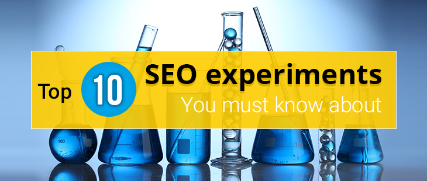

<?xml version="1.0" encoding="UTF-8"?><rss version="2.0"
	xmlns:content="http://purl.org/rss/1.0/modules/content/"
	xmlns:wfw="http://wellformedweb.org/CommentAPI/"
	xmlns:dc="http://purl.org/dc/elements/1.1/"
	xmlns:atom="http://www.w3.org/2005/Atom"
	xmlns:sy="http://purl.org/rss/1.0/modules/syndication/"
	xmlns:slash="http://purl.org/rss/1.0/modules/slash/"
	>

<channel>
	<title>Search Engine Optimization &#8211; Blog</title>
	<atom:link href="https://www.ehorizon.ae/blog/tag/search-engine-optimization/feed/" rel="self" type="application/rss+xml" />
	<link>https://www.ehorizon.ae/blog</link>
	<description></description>
	<lastBuildDate>Thu, 01 Mar 2018 05:29:32 +0000</lastBuildDate>
	<language>en-US</language>
	<sy:updatePeriod>hourly</sy:updatePeriod>
	<sy:updateFrequency>1</sy:updateFrequency>
	<generator>https://wordpress.org/?v=4.4.15</generator>
	<item>
		<title>Beware of Google’s Latest Fred Algorithm Update</title>
		<link>https://www.ehorizon.ae/blog/2017/04/05/beware-of-googles-latest-fred-algorithm-update/</link>
		<comments>https://www.ehorizon.ae/blog/2017/04/05/beware-of-googles-latest-fred-algorithm-update/#respond</comments>
		<pubDate>Wed, 05 Apr 2017 12:57:52 +0000</pubDate>
		<dc:creator><![CDATA[eHorizon]]></dc:creator>
				<category><![CDATA[Search Engine Optimization]]></category>

		<guid isPermaLink="false">https://www.ehorizon.ae/blog/?p=185</guid>
		<description><![CDATA[<p>Most websites saw their traffic getting hit adversely since Google confirmed the release of the Fred algorithm update as one of its latest webmaster tools. While most businesses were unprepared for this drastic roll-out by Google, Fred has hit a large number of websites really hard, based on the new parameters set by Google to [&#8230;]</p>
<p>The post <a rel="nofollow" href="../../../2017/04/05/beware-of-googles-latest-fred-algorithm-update/index.html">Beware of Google’s Latest Fred Algorithm Update</a> appeared first on <a rel="nofollow" href="../../../index.html">Blog</a>.</p>
]]></description>
				<content:encoded><![CDATA[<p style="text-align: justify;">Most websites saw their traffic getting hit adversely since Google confirmed the release of the Fred algorithm update as one of its latest webmaster tools. While most businesses were unprepared for this drastic roll-out by Google, Fred has hit a large number of websites really hard, based on the new parameters set by Google to rank pages based on SEO and content.</p>
<p style="text-align: justify;">Search engine optimization has now taken a different turn resulting in the falling ranks and quality of numerous websites on Google last month. Since Google rolled out Fred on March 8, 2017, websites are having a tough time stabilizing their rankings in search engine results while determining the key factors that led to the drastic fall in page ranks.</p>
<p style="text-align: justify;">Google has confirmed the initiation of the Fred update to monitor those websites with low-value content, heavy advertisements, page banners, etc. On a broader perspective, this is one of those impacts by Google update, where websites got hit due to their failure to comply with the webmaster guidelines and the violation to adhere to specific webmaster rules and guidelines.</p>
<p style="text-align: justify;"></p>
<p style="text-align: justify;">If you have noticed your website ranks considerably dropping over the last few weeks, it is because Fred has been on the job to monitor web pages based on certain parameters set new by Google. With Google introducing webmaster tools and rolling out new updates to change its algorithm at least 500 times every year, most businesses have a lot to watch out for with the latest Fred update. And if you are deeply confused with why your websites were attacked by Fred, the following points can help you determine the cause and work more towards creating and optimizing websites that Google Fred actually supports.</p>
<ol style="text-align: justify;">
<li><strong>Shallow content</strong></li>
</ol>
<p style="text-align: justify;">Your website might have all the content that you need. However, the quality of the content is one thing you have to ensure apart from just focusing on the word count or content length of your articles, blogs, press releases, and more. Those websites with shallow and poor-quality content have been hit adversely in the last month. The Fred update led to a decline in the organic traffic that most websites with shallow content were enjoying till now. Seems like it is time to pull up your socks and put some thought into the type of content that you are using for your website than just stretching the content materials in terms of word count.</p>
<ol style="text-align: justify;" start="2">
<li><strong>Heavy advertising</strong></li>
</ol>
<p style="text-align: justify;">Fred seems to have taken a major dislike to websites that have heavy advertising material in them. Websites and pages that have been pretty heavy and rigorous on their ad placements and usage have been targeted by Fred in the most effortless way, leading to a decline in not just page ranks, but also organic website traffic. Heavy advertising is one of the main reasons why most websites are getting pushed back in search engine results, leading to major fallout for most small and large businesses. Yes, advertising is definitely good. But maybe it is time that we kept our loud advertising strategies a bit in control and let your business activities do most of the talking. If you have a website with numerous advertising content and popups, take some action now if you don’t want Fred pulling you back from the online competition.</p>
<ol style="text-align: justify;" start="3">
<li><strong>Heavy affiliation</strong></li>
</ol>
<p style="text-align: justify;">This is for most e-commerce websites with too many or heavy banner ads. Heavy affiliation through AdSense campaigns with the use of banner ads on websites is again one thing you should be aware of with the Fred update coming along your way. Try to keep your advertising methods in limits and aim to offer valuable information to your reader with high-quality and precise content. Over-optimizing websites with too many advertising materials and banner ads will simply ruin your online reputation for Fred, and Fred might be left with no choice but to impact your websites’ visibility in search engine results.</p>
<p style="text-align: justify;">Although Google does not use a specific or standard set of ranking tools, Fred is indeed an important webmaster update that is giving most businesses a run for their money. With Google constantly informing websites to not violate existing webmaster guidelines, the Fred update is indeed an important step taken to lay emphasis on content-driven websites that actually offers some value to their visitors.</p>
<p style="text-align: justify;">Refrain from using content that has less or no value to your visitors. Avoid trying too many marketing and advertising tactics on your websites itself, as you can focus your marketing efforts on other channels through various other strategies. Fred is now going to compel businesses to improve the quality and performance of their websites further, which is just another favorable thing to look out for in this dynamic <a href="http://searchengineland.com/library/google/google-algorithm-updates" target="_blank">SEO</a> trend in the market.</p>
<p style="text-align: justify;">As this is just the beginning of fallout for major websites, the Fred update is surely here to stay for some time and will continue to impact a large number of websites, very similar to the situation when Google Panda and Google Penguin update were released earlier. The fact is clear that Google is indeed constantly monitoring websites and is definitely charged up to take some action against low-value and non-performing websites online. However, there is no golden egg that needs to be cracked with the Fred update, but if you can take care of the small things defined by webmaster guidelines, the Fred algorithm update will be unable to deeply affect your business in any manner.</p>
<p>The post <a rel="nofollow" href="../../../2017/04/05/beware-of-googles-latest-fred-algorithm-update/index.html">Beware of Google’s Latest Fred Algorithm Update</a> appeared first on <a rel="nofollow" href="../../../index.html">Blog</a>.</p>
]]></content:encoded>
			<wfw:commentRss>https://www.ehorizon.ae/blog/2017/04/05/beware-of-googles-latest-fred-algorithm-update/feed/</wfw:commentRss>
		<slash:comments>0</slash:comments>
		</item>
		<item>
		<title>Possum and Penguin 4.0 – Check Whether You Have Been Hit By These Roll-Outs Recently</title>
		<link>https://www.ehorizon.ae/blog/2016/10/07/possum-and-penguin-4-0-check-whether-you-have-been-hit-by-these-roll-outs-recently/</link>
		<comments>https://www.ehorizon.ae/blog/2016/10/07/possum-and-penguin-4-0-check-whether-you-have-been-hit-by-these-roll-outs-recently/#respond</comments>
		<pubDate>Fri, 07 Oct 2016 11:13:02 +0000</pubDate>
		<dc:creator><![CDATA[eHorizon]]></dc:creator>
				<category><![CDATA[Search Engine Optimization]]></category>

		<guid isPermaLink="false">https://www.ehorizon.ae/blog/?p=140</guid>
		<description><![CDATA[<p>Google has always loved to play new and dynamic SEO games with us. And recently, the Possum and Penguin 4.0 updates have taken the SEO industry by a storm as Google now keeps a better and clearer eye on what and how you do SEO for your website. Although the Possum and Penguin 4.0 updates [&#8230;]</p>
<p>The post <a rel="nofollow" href="../../../2016/10/07/possum-and-penguin-4-0-check-whether-you-have-been-hit-by-these-roll-outs-recently/index.html">Possum and Penguin 4.0 – Check Whether You Have Been Hit By These Roll-Outs Recently</a> appeared first on <a rel="nofollow" href="../../../index.html">Blog</a>.</p>
]]></description>
				<content:encoded><![CDATA[<p style="text-align: justify;">Google has always loved to play new and dynamic SEO games with us. And recently, the Possum and Penguin 4.0 updates have taken the SEO industry by a storm as Google now keeps a better and clearer eye on what and how you do SEO for your website. Although the Possum and Penguin 4.0 updates are aimed at slightly different SEO tactics, however, the intent of both the updates remain the same.</p>
<p style="text-align: justify;">With the introduction of these updates, it has indeed become quite difficult for many websites to match up to the expectations and quality of what Google algorithm wants out of us. With the discrepancies and confusion of what could be better and what would be a total waste of time, then let’s just remind you here that you need to lay utmost priority for both the updates equally. The Possum and Penguin 4.0 updates are not a minor change but a major shift in <a href="https://webmasters.googleblog.com/2016/09/penguin-is-now-part-of-our-core.html" target="_blank"><strong>SEO</strong></a> trends. And it would be difficult to even determine which update hit you when you witness a shift in ranks and stand of your websites/web pages.</p>
<p style="text-align: justify;">It will be difficult to determine whether Possum or Penguin fit you like a breeze and for what exactly it hit you. To understand that, you need to determine or analyze how each of these updates works and what part of SEO is exactly being targeted.</p>
<p style="text-align: justify;"></p>
<p style="text-align: justify;"><strong>Here is an overview of the major changes that have been rolled out by Possum for SEO:</strong></p>
<ol style="text-align: justify;">
<li><strong>Precision in targeting location of the users:</strong></li>
</ol>
<p style="text-align: justify;">Possum focuses on understanding the exact location of a searcher and provides relevant information based on their geo-location. So, if you have not localized rank monitoring according to location listing in your websites/web pages, then your page is most likely to suffer some consequences thrown by Possum.</p>
<p style="text-align: justify;">To display exact, useful and relevant search results to users, Google has started targeting the location as a part of their user information data collection, according to which the search engine lists all pages. If you wish to stay away from the hits of this revolutionary update, then ensure that you use a Rank Monitor tool that allows you to create and target custom locations easily.</p>
<ol style="text-align: justify;" start="2">
<li><strong>If you are outside the city limits, even better for you:</strong></li>
</ol>
<p style="text-align: justify;">Possum has come out with this really interesting turn in SEO that impact the local ranks of websites that operate out of the city boundaries. Previously, it was difficult to survive in the competition and stay ahead in the local market, especially with your business not being exactly in the city but probably somewhere around the city or elsewhere. Now, businesses located outside the city’s physical limits have been given an upper hand with boosting ranks. You can easily state your presence in a better manner in central location listings, all thanks to Possum.</p>
<ol style="text-align: justify;" start="3">
<li><strong>Don’t’ try duplicating address anymore </strong></li>
</ol>
<p style="text-align: justify;">Yes, Google has never liked the activity of duplication anyway since a long time now. And now, the search engine has extended the same policy to detect same phone numbers, location, and addresses.</p>
<p style="text-align: justify;">For example, if you are offering a service very similar to that of other providers in the same area, or even right next to where the physical location your business is, then is definitely a bad news for you. Businesses with the same/identical addresses are being ruled out.</p>
<p style="text-align: justify;">The only major way you can get away from this by being as accurate and unique as possible while listing your business address. Try not to use the same location or address of other businesses or service providers in the market. To help you further, encourage users to leave customer reviews so that you are not directly under the eye of Google. Verify your business descriptions across all directories that can be a proof of the authenticity of your business. List your business on all resources and records and ensure that you are giving out an image that your business is authorized and registered across all domains. Sharing the same address with other business in your local area or market can make your page less visible in search results, and such pages are also removed on charges of duplication. So be careful the next time you insert your business address – keep it different, unique and precise.</p>
<ol style="text-align: justify;" start="4">
<li><strong>Localize your keywords for better targeting</strong></li>
</ol>
<p style="text-align: justify;">Possum has made the intent of keyword search a bit different from what it was before. Search queries matter a lot for Google listings, and therefore, displays local search results more specifically and precisely for the user. If you have a list of keywords that you think can help you be more visible to your users, think again and verify the list. Localize your keywords more so that Google is left with no room but to show your websites/web pages anyhow to the users.</p>
<p style="text-align: justify;">For example, a user putting in a search query with ‘Charleston gym equipment’ will receive different page listings than when the user puts ‘Charleston gym equipment south Carolina’. The second keyword is noticeably more localized, and that is what you should be trying to achieve through your list of targeted keywords. Try to add full city name, state/region name, zip code, and such to get better website ranks in Google.</p>
<p style="text-align: justify;"><strong>Here is an overview of what the Penguin 4.0 update is all about:</strong></p>
<p style="text-align: justify;">A lot of mystery still surrounds with the update of this massive SEO attached by Google, that is, the Penguin 4.0. And no one really is sure whether it has been completely rolled out to play its SEO game with our website. Penguin 4.0 might be slowly crawling into the search engine to mark its effect, but it is still unsure as to when and how will it show itself completely and turn the entire SEO industry around.</p>
<p style="text-align: justify;">Penguin 4.0 is widely being considered as an attempt by Google to rule out all websites indulging with negative or black hat SEO strategies. There are a lot of factors that your websites/web pages could get penalized with if Penguin comes to the main action.</p>
<p style="text-align: justify;"><strong>Backlinks are an important focus of Penguin 4.0-</strong></p>
<p style="text-align: justify;">Because websites are monitored to a great extent on their backlinks and linking support, <a href="https://www.seroundtable.com/google-penguin-4-live-22737.html" target="_blank"><strong>Penguin 4.0</strong></a> has found this to a great an apt way of penalizing websites. Links that contain spammy websites/pages, paid links, links from irrelevant websites, links having over-optimizing content and anchor text are only a few of the deciding factors that will compel Penguin to take an action against your business. Backlinks are one thing that is not on the hit list of Possum, although, Penguin alone should be enough to determine the quality, relevance and ranks of websites based on back linking factors.</p>
<p style="text-align: justify;">If you think that your website ranks have dropped since the last time you reviewed it, there is a chance that Penguin has already hit you. And how exactly do you check that?</p>
<p style="text-align: justify;"><strong>Run a Penguin audit immediately</strong></p>
<ol style="text-align: justify;">
<li>Use the right tool to check for penalty risks</li>
</ol>
<p style="text-align: justify;">Because and obviously Penguin already has a lot of factors through which it can determine spammy links, you need to have a complete run-through your back links and conduct an audit for the same. There are tools that you can use, and which can give you a complete report of what links of your website have been targeted, and what are the penalties that have been levied by Penguin on you.</p>
<p style="text-align: justify;">For example, you can use the free trial version of SEO PowerSuite’s SEO SpyGlass. It is an immensely great tool to conduct the right link audit, and it gives you detailed information and report on every link that your website carries or is associated with, and the factors that have actually pulled your website down.</p>
<ol style="text-align: justify;" start="2">
<li>Take some action against harmful links</li>
</ol>
<p style="text-align: justify;">The key to keeping yourself safe from Penguin hitting you is by removing all harmful links that your website is associated or linked with. Now this is usually done by contacting the webmasters of the linking websites. However, if you wish to avoid that, you can get in touch with Google directly through the Google Disavow Tool, requesting them to disavow the spammy or harmful links when they evaluate your website. But it is imperative that you do take some action and eliminate such links that can be harmful to your business and eventually lead to dropped ranks of your websites/web pages.</p>
<p style="text-align: justify;">Possum and Penguin 4.0 are pretty calculative in their own ways. And there is no way of determining which of these would hit your first. But because such advanced updates are rolling out, it is best to stay cautious and stay alert for these two massive SEO giants that are practically revolutionizing the SEO industry today.</p>
<p>The post <a rel="nofollow" href="../../../2016/10/07/possum-and-penguin-4-0-check-whether-you-have-been-hit-by-these-roll-outs-recently/index.html">Possum and Penguin 4.0 – Check Whether You Have Been Hit By These Roll-Outs Recently</a> appeared first on <a rel="nofollow" href="../../../index.html">Blog</a>.</p>
]]></content:encoded>
			<wfw:commentRss>https://www.ehorizon.ae/blog/2016/10/07/possum-and-penguin-4-0-check-whether-you-have-been-hit-by-these-roll-outs-recently/feed/</wfw:commentRss>
		<slash:comments>0</slash:comments>
		</item>
		<item>
		<title>Change Forever the Way You Do SEO with These Amazing Experiments</title>
		<link>https://www.ehorizon.ae/blog/2016/09/26/change-forever-the-way-you-do-seo-with-these-amazing-experiments/</link>
		<comments>https://www.ehorizon.ae/blog/2016/09/26/change-forever-the-way-you-do-seo-with-these-amazing-experiments/#respond</comments>
		<pubDate>Mon, 26 Sep 2016 11:20:07 +0000</pubDate>
		<dc:creator><![CDATA[eHorizon]]></dc:creator>
				<category><![CDATA[Search Engine Optimization]]></category>

		<guid isPermaLink="false">https://www.ehorizon.ae/blog/?p=132</guid>
		<description><![CDATA[<p>There are more than 200 factors that can determine the ranks of our websites. Google has a variety of algorithms that are put into action when it comes to deciding page rankings and quality of websites. There have been a lot of speculations about the applicability of a few such factors that have made SEO [&#8230;]</p>
<p>The post <a rel="nofollow" href="../../../2016/09/26/change-forever-the-way-you-do-seo-with-these-amazing-experiments/index.html">Change Forever the Way You Do SEO with These Amazing Experiments</a> appeared first on <a rel="nofollow" href="../../../index.html">Blog</a>.</p>
]]></description>
				<content:encoded><![CDATA[<p>There are more than 200 factors that can determine the ranks of our websites. Google has a variety of algorithms that are put into action when it comes to deciding page rankings and quality of websites. There have been a lot of speculations about the applicability of a few such factors that have made SEO a tricky and difficult thing to understand and implement. Especially with the confidentiality of Google algorithms, businesses have taken a step ahead by getting involved in various experiments that can prove and justify the truth about such SEO factors.</p>
<p>Amongst such misconceptions, there are a few aspects of SEO that most businesses are unaware of, or are not sure about their implementation and resourcefulness thereafter. But there is one thing for sure, that the following experiments discussed in this blog will truly change the way you think <a href="../../../../seo-services.html">about SEO</a> and as such, urge you to use it.</p>
<p>People have been making attempts to get their speculations clarified, and the following experiments are known to have had one of the biggest impacts on a large number of websites, in terms of SERP’s. Take a look at how you can apply the same experiments to your website, especially if you are still struggling to get traffic, higher rankings, and conversion rates for your business.</p>
<p></p>
<p>&nbsp;</p>
<p><strong>Yes, Click-Through-Rate does affect Your Organic Rankings</strong></p>
<p>While most might not agree with this, but here is a surprise. Click-Through-Rates have been proven to be one of the most vital factors when it comes to improving a website’s organic ranks in search engine results. The best way to doing this is <a href="../../../../pay-per-click-management-services.html">Google Adwords</a>, following the click and query method that allows users to view and click on your ads when it relates to the keywords that they put in to search for a specific product or service. CTR is known to result in a greater and more powerful call-to-action by website visitors.</p>
<p>The higher clicks you get from your visitors, the more your organic page ranking is influenced and improved. Another important thing to keep in mind here is that just getting clicks is not enough; you need to ensure that you sustain the users for a long time on your website, and compel them to click through more to improve your page rankings. Page titles and meta descriptions will surely help you a long way to get more clicks, and thus enhance your website organic rank to a great extent.</p>
<p>&nbsp;</p>
<p><strong>Have you heard of being Mobile-Friendly?</strong></p>
<p>Studies have shown that websites that are not mobile-friendly or responsive have incredibly lost their rankings in this very important aspect of SEO. <a href="../../../../responsive-website-design-services.html">Creating mobile-friendly websites</a> has become the key to improving SERP’s. While many could be doubtful about it, here is something to keep those arguments to rest – Mobile-friendly websites do fetch higher rankings than those that are not fully responsive and optimized.</p>
<p>Google clearly determines the websites URL’s that are mobile-friendly and gives them a higher ranking in search engine results. So if you have still not made your page mobile-friendly, then what are you waiting for?</p>
<p>&nbsp;</p>
<p><strong>Link Ghosts do exist</strong></p>
<p>This explains the proven theory of Link Effect. It goes on to saying that the rankings of websites do stay for long even after backlinks are removed. Yes, you read that right. Experiments performed on the existence and applicability of the Link Effect goes on to add further that quality links do stay with your website for a long time, more than what you would expect.</p>
<p>While adding backlinks surely do give your website the necessary weight in search engine results, non-existent backlinks are no less important either. It has been found that Google does not take action against pages when the links are removed. Rather, based on the quality of the backlink, Google allows the link to stay with your page and continue to get quality visitors and traffic to your website. To make sure that you take advantage of this golden experiment to the fullest, ensure that you have quality backlinks for your website, so that even if the link is removed, your pages do not get affected in months or years to come.</p>
<p>&nbsp;</p>
<p><strong>You can go ahead and duplicate content</strong></p>
<p>Google does not define any metrics for differentiating the original source of content from websites that have duplicated content. And that makes things easier for a lot of people online. Experiments have been conducted to apply this aspect of SEO that has come out with two main observations. One, a higher PageRank copied page beat the page with the <a href="../../../../content-marketing-services.html">original content</a>. Two, there are chances of the original content page getting removed if more pages with duplicated contents outrank the original.</p>
<p>With the following two observations, there are a few things to be kept in mind. Firstly, if your website has duplicated content but is somehow still at a higher rank than the website with original content, you can stay worry-free about your website being removed. Because your website has a higher PageRank (PR), you can use duplicated content as that will not really impact the rankings of your page. It is sometimes difficult for Google to differentiate the original source from the copied websites due to higher PRs of copycat websites.</p>
<p>However, always bear in mind that no matter what you do, how you copy content off other websites and what you wish to copy, Plagiarism is something that is lawfully and ethically wrong in the eyes of Google. Duplicated content definitely seems okay until the time Google doesn’t catch you red-handed. Refrain from plagiarizing content as it is unethical, even though you have the freedom to duplicate content to some extent.</p>
<p>&nbsp;</p>
<p><strong>Rich Answers is the new ‘Top-Spot’ today</strong></p>
<p>If you are still struggling to bring your website to the top rank in search engine results, forget that and aim a bit higher. The higher position here today would be rich answers. If you have noticed, when you type in and search your query, a small box is displayed right at the top of the page, which is a sort of a dialogue box that answers your query with a short description without the users having to click through a particular website. These rich answers aim to give readers the information in a precise and informative way, which has a more or less chance of resolving or answering whatever the user is trying to search for.</p>
<p>It has become more fruitful to target rich answers more than just securing the top rank in search engine. There are a few ways in which you can easily hit the rich answers and improve your SEO strategies.</p>
<ol>
<li>Identify a question: Now the question needs to be simple and to the point. Using relevancy tools, you can frame a simple question that is most likely to be searched upon by users.</li>
<li>Provide a straight answer: Your answer needs to be simple, clear and precise. The answer must be useful to visitors as well as to search engines.</li>
<li>Add more value: Don’t re-quote or copy content. But try to provide additional details and information that can increase the value of your rich answer.</li>
<li>Make it easy to share: Your rich answer will hold no value if users and Google cannot find it easily. With the help of link sharing and social media platforms, you can get the rich answer in the limelight.</li>
</ol>
<p>&nbsp;</p>
<p><strong>The twisting tale of using HTTPS</strong></p>
<p>It is best to make your websites secure with HTTPS link. Google always wants users to access and reach safe websites, and thus HTTPS comes into the picture with a great play. However, this same play by HTTPS does not hold much value when it comes to SEO. After rigorous experiments, it has been deciphered that websites that do not have an HTTPS coding have the chance or do secure higher rankings in search engine results than the websites that are secured with HTTPS.</p>
<p>For this odd reason, it is advisable that you stick to using HTTP unless and until it is really required to shift. Using HTTP can get desirable ranks for your website as using HTTPS has found to have no adverse impact when it comes to ranking websites on Google.</p>
<p>&nbsp;</p>
<p><strong>Are outbound links really that bad?</strong></p>
<p>It is a conceived notion in the SEO field that outbound links hampers your page rankings. We believe that the more outbound links our pages have, the higher chances are the page rankings dropping eventually. Well, that is what we believe. But here’s an interesting fact. Outbound links do just the opposite and play a much better role in improving PageRanks than any other aspects of SEO.</p>
<p>Experiments conducted have shown that the ranks of pages with outbound links surpassed those with less or no outbound links. It is imperative that you link your articles, blogs, and any other post with other useful and resourceful pages and websites. Outbound linking is a great way of improving page ranks, and getting more quality visitors to your page. So the next time you post an article on your website, make sure you add a link right there that could direct users to more informative resources outside.</p>
<p>&nbsp;</p>
<p><strong>Nofollow links have great value</strong></p>
<p>Most people believe nofollow links to have no direct SEO value for websites. However, experiments have proven the fact that when websites receive nofollow ranks, they witness significant improvement in rankings. When you index websites with nofollow links, the page rankings get improved and such websites move a few steps ahead in their ranking position than those that do not have any nofollow links indexed with them.</p>
<p>Also, when you remove nofollow links from websites, the rankings get improved likewise as well. This goes only to say that irrespective of whether you remove or index a nofollow link to your web page, the page rank will get improved in both the cases. So, break out of all speculations that nofollow links might not bring value to your website because they actually do and play a great role in improving page ranks.</p>
<p>&nbsp;</p>
<p><strong>Try the magic of Press Releases</strong></p>
<p>Not many are aware of this, but press releases do hold the key somewhere to better page rankings and higher website visibility in search engine results. When you issue a press release anywhere over the internet, adding a link to your website turns out to be a brilliant move as it improves the value of your website altogether. Those who think that press release don’t work out well for them is untrue. Try it out for yourself the next time you are thinking of means and ways to increase website ranks in search engine results, and be rest assured that you still will try achieving that position by linking press releases on the web.</p>
<p>&nbsp;</p>
<p><strong>Negative SEO exists for real</strong></p>
<p>You are taught to not ideally harm your competitor’s page rankings, but the influence of negative SEO methods has highly encouraged or compelled people to do so. A little push to the dirty game, negative SEO does exist and can actually work out wonders for your business if you know how to do that well.</p>
<p>The most popular way is link spamming. Target your competitor’s keywords and create junk files and comment links which might hamper the growth of their business. Also, targeting main keywords noticeably reduces the effect of the other secondary keywords as well, plummeting website rankings to a great extent. Do not try this unless extremely required to do so. Negative SEO is good; however, you must be more focused on driving your website’s SEO value than impacting others’.</p>
<p>The above experiments are just a few off the list that has given out surprisingly positive results. Some of these theories are probably a thing you were not even aware off, but they do work. These are still experiments that are left in your hand to try out and see the results on your own. People have tried the above methodologies and gained successful page rankings. If you wish to see your website at that standing, trying these simple and cheap methods would really result in no harm. It is time to wear the SEO hat and challenge the preconceived algorithms and calculations of Google, and undoubtedly, you will notice your beliefs about SEO changing over the due course of time.</p>
<p>The post <a rel="nofollow" href="../../../2016/09/26/change-forever-the-way-you-do-seo-with-these-amazing-experiments/index.html">Change Forever the Way You Do SEO with These Amazing Experiments</a> appeared first on <a rel="nofollow" href="../../../index.html">Blog</a>.</p>
]]></content:encoded>
			<wfw:commentRss>https://www.ehorizon.ae/blog/2016/09/26/change-forever-the-way-you-do-seo-with-these-amazing-experiments/feed/</wfw:commentRss>
		<slash:comments>0</slash:comments>
		</item>
		<item>
		<title>Get Your Websites Ready For Penguin 4.0, Arriving Really Soon!</title>
		<link>https://www.ehorizon.ae/blog/2016/06/22/get-your-websites-ready-for-penguin-4-0-arriving-really-soon/</link>
		<comments>https://www.ehorizon.ae/blog/2016/06/22/get-your-websites-ready-for-penguin-4-0-arriving-really-soon/#respond</comments>
		<pubDate>Wed, 22 Jun 2016 10:19:21 +0000</pubDate>
		<dc:creator><![CDATA[eHorizon]]></dc:creator>
				<category><![CDATA[Search Engine Optimization]]></category>
		<category><![CDATA[SEO]]></category>

		<guid isPermaLink="false">https://www.ehorizon.ae/blog/?p=79</guid>
		<description><![CDATA[<p>The earlier and first version of Penguin practically revolutionized the structure of off-page SEO completely. It released an unnatural spam signal that immediately detected sites guilty of link scheming from the SERP’s. And with the upcoming real-time update of Penguin, spammy links will be tweaked and removed faster than a blink of an eye. SEOs [&#8230;]</p>
<p>The post <a rel="nofollow" href="../../../2016/06/22/get-your-websites-ready-for-penguin-4-0-arriving-really-soon/index.html">Get Your Websites Ready For Penguin 4.0, Arriving Really Soon!</a> appeared first on <a rel="nofollow" href="../../../index.html">Blog</a>.</p>
]]></description>
				<content:encoded><![CDATA[<p style="text-align: justify;">The earlier and first version of Penguin practically revolutionized the structure of off-page SEO completely. It released an unnatural spam signal that immediately detected sites guilty of link scheming from the SERP’s. And with the upcoming real-time update of Penguin, spammy links will be tweaked and removed faster than a blink of an eye.</p>
<p style="text-align: justify;">SEOs have been having an enjoyable time with unnatural links for better traffic and conversion rates. Sadly, Penguin is arriving just to kill that joy once and for all. With the real-time feature, Penguin will also be on the continuous watch for spam-linked websites.</p>
<div id="attachment_80" style="width: 1210px" class="wp-caption aligncenter"><p class="wp-caption-text">Get Your Websites Ready For Penguin 4.0,</p></div>
<p style="text-align: justify;">It is time for SEOs to pull up their socks and go for a comprehensive Penguin link audit to actually tackle those scary moves that Google will begin throwing. After all, it is better to be safe than sorry, especially when you know you can lose out on a huge business if you don’t start taking necessary precautions starting from now. Although no official news or update has been making the rounds yet, there is no doubt that Google Penguin will hit SEOs real hard when they actually start making the rounds.</p>
<ul class="service-list service-list02">
<li><strong>Prepare a list of the links and domains</strong></li>
</ul>
<p style="text-align: justify;">To begin filtering out, first and foremost, you need to prepare an entire list of all the external links and referring domains that link to your current website. There are tools that can literally help you do that in a much simpler manner.</p>
<p style="text-align: justify;">Try out Google Search Console or <strong><a href="https://webmasters.googleblog.com/" target="_blank">SEO</a></strong> PowerSuite. Powerful equipment such as these can pull out the links and domains associated with your website, making it easier for you to actually detect the number of backlinks that your website has.</p>
<ul class="service-list service-list02">
<li><strong>Eliminate the Chaos</strong></li>
</ul>
<p style="text-align: justify;">Use SEO SpyGlass (a part of SEO PowerSuite) to help understand and analyze the status of each link and domain you have on your list. You have to remove links that no longer are connected to your site. You would expect Google to already have removed them, but there are some links that the master does not remove with immediate effect.</p>
<p style="text-align: justify;">Links that have a ‘no follow’ attribute although can be a star when it comes to bringing traffic to your website. However, if they don’t have a link base or if they come from non-authoritative domains, it is better you remove it before Google Penguin does once it’s out in the market.</p>
<p style="text-align: justify;">Everything cut short; remove links and useless domains that are literally of no help to your website. Just remember that traffic website is not the only countable matter in this whole humdrum. The point is to eliminate links that no longer exist or those domains that can actually put your website in trouble in the later stages.</p>
<ul class="service-list service-list02">
<li><strong>Spot the Links Carrying Penalty Risks</strong></li>
</ul>
<p style="text-align: justify;">This is where the main action gets started. You have removed all the noise, so it’s time to focus on the music. Existing links that can be dangerous or risky based on Google&#8217;s algorithms to detect spammy and unnatural links have to be taken down. Using SEO SpyGlass, you can immediately find out the penalty risk each of your backlinks carry and take action thereafter.</p>
<p style="text-align: justify;">This tool also helps you understand why the link or domain is considered risky because obviously you want a reason to take that link down. Your backlinks get segregated according to the risk percentage that follows it. After that, it is all on you on whether or not you want to take some action on such risky link domains.</p>
<ul class="service-list service-list02">
<li><strong>Check for Traffic-Bringing Risky Links</strong></li>
</ul>
<p style="text-align: justify;">Some links could be toxic, yet they could still bring your website immense traffic. Before you out rightly disavow them, use SpyGlass and determine the risky links and domains that are currently bringing traffic to your website. Just because they are risky doesn&#8217;t not mean their performance is essentially poor.</p>
<p style="text-align: justify;">You don’t want to lose that handful of visitors that are being actually being gifted by such unnatural links. So think before you take a call. If you find some prominent traffic flow from risky domains, contact webmasters and take necessary action with respect to no follow requests. Up till this stage, keep these useful yet risky domains in hand.</p>
<ul class="service-list service-list02">
<li><strong>Contact Webmasters</strong></li>
</ul>
<p style="text-align: justify;">Google requires a request for a link removal before we disavow risky and spammy links. Reaching out to webmasters was previously difficult, which has been made comparatively easy by SEO PowerSuite’s LinkAssistant tool. If you want to send out emails for link removals manually, you will have a hard time seeking the contact details of webmasters. Make it easy on yourself and save tons of time by using the LinkAssistant tool to quickly approve and take down dangerous website backlinks.</p>
<p style="text-align: justify;">Make a list of all the risky links that require a shut to their services based on the above-mentioned prerequisites. Don’t underestimate the consequences of Google penalties by acting a little smart and keeping traffic generating yet spammy links or domains. Stay safe from the traps by sending link removal and no-follow requests to webmasters for taking them down off search engines.</p>
<ul class="service-list service-list02">
<li><strong>Disavow, When Everything In Vain</strong></li>
</ul>
<p style="text-align: justify;">If, by whatever chance, you fail to contact the webmaster or do not receive a reply from them after days and weeks have passed, disavow the toxic links/domains. However, keep the disavow option open for the last resort. Although you disavow such links and get rid of them in a definite way, you will still have to maintain a record and submit it to Google.</p>
<p style="text-align: justify;">You can create a disavow file on the SpyGlass’ tool. Just go to each link and start adding them one by one to the disavow list. At the end, you will find a separate section maintained containing all the toxic and spammy links you have removed. You can generate the file using this tool itself, and later on go to Google Search Console’s Disavow Tool and upload the same.</p>
<ul class="service-list service-list02">
<li><strong>Spot the Weak Points</strong></li>
</ul>
<p style="text-align: justify;">Now that your major task is done, you can start building up links that could actually sound and fruitful for your business. The next step is to focus on the performance of your competitors and see in what areas your website is lagging behind. Use the Domain Comparison tool of SEO SpyGlass, put in the URL’s of your competitors and analyze the differences.</p>
<p style="text-align: justify;">You will notice all the websites rankings and how specific backlink-related factors are actually affecting your business to theirs. To carve your niche, research in detail about link intersection and backlink factors. Check out what domains are linked to multiple websites and how that relation is actually proving to be good for them. Tag these domains for you to contact them later and get in the same place or at a better stand in the niche. Acting on such link opportunities will help you with a deeper insight of your competitors’ backlink strategies and how they are optimizing the target keywords for better traffic.</p>
<p style="text-align: justify;">Put in or keep a record of the domains and links that can necessitate the same success or even better for your website as compared to your competitors. One thing here, just removing spammy links is not important. What&#8217;s more important is that you remove what is not required and place/use what is actually required.</p>
<ul class="service-list service-list02">
<li><strong>Keep your link profile clean for Google</strong></li>
</ul>
<p style="text-align: justify;">With Penguin becoming real-time, it is going to definitely jeopardize the mannerisms and structures of SEOs. Constant evaluation and regular link-auditing should undoubtedly become a part of your SEO routine. And with tools like SEO PowerSuite, maintaining link profiles is really not that cumbersome anymore. The first time that you assess for domain checks and link audits, don&#8217;t forget to tag them which will make the next routine check easy only for you. What&#8217;s more, follow these basic steps and conduct occasional link audit processes to make your websites Penguin-proof.</p>
<p>The post <a rel="nofollow" href="../../../2016/06/22/get-your-websites-ready-for-penguin-4-0-arriving-really-soon/index.html">Get Your Websites Ready For Penguin 4.0, Arriving Really Soon!</a> appeared first on <a rel="nofollow" href="../../../index.html">Blog</a>.</p>
]]></content:encoded>
			<wfw:commentRss>https://www.ehorizon.ae/blog/2016/06/22/get-your-websites-ready-for-penguin-4-0-arriving-really-soon/feed/</wfw:commentRss>
		<slash:comments>0</slash:comments>
		</item>
	</channel>
</rss>

<!-- Localized -->